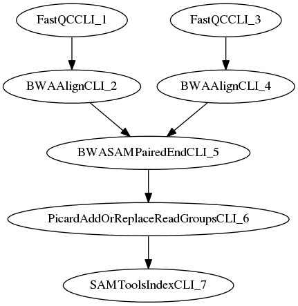

Workflows
MaPSeq uses HTCondor as a meta-scheduler. HTCondor has two types of jobs: simple & dagman. Simple jobs just execute one task whereas DAGMan jobs are Directed Acyclic Graph Managed (DAGMan) jobs. MaPSeq only uses the later job type.
To construct a Directed Acyclic Graph, MaPSeq leverages a graphing library call JGraphT. This library allows for an assortment of Java typed graphs (directed/undirected, cyclic/acyclic, weighted/unweighted). For the purposes of high throughput sequencing, MaPSeq is only concerned with directed acyclic graphs. Using the CondorJob & CondorJobEdge classes availabe from jLRM, one can programmatically construct a workflow that can be exported into a HTCondor queue.
Lifecycle
Execution of a Workflow in MaPSeq is comprised of 5 lifecycle events:
- init
- validate
- preRun
- call
- postRun
Creating a Workflow
Creating a Workflow requires creating a new class that extends edu.unc.mapseq.workflow.impl.AbstractWorkflow, implements the "createGraph", "getVersion", and "getName" routines. The "createGraph" method returns a org.jgrapht.Graph<CondorJob, CondorJobEdge> instance. For the high-throughput sequencing efforts, there is a edu.unc.mapseq.workflow.impl.AbstractSampleWorkflow that has some additional logic to aggregate Flowcell instances & selected Sample instances into one Set.
public class NCGenesAlignmentWorkflow extends AbstractSampleWorkflow {
@Override
public String getName() {
return NCGenesAlignmentWorkflow.class.getSimpleName().replace("Workflow", "");
}
@Override
public String getVersion() {
ResourceBundle bundle = ResourceBundle.getBundle("edu/unc/mapseq/workflow/ncgenes/alignment/workflow");
String version = bundle.getString("version");
return StringUtils.isNotEmpty(version) ? version : "0.0.1-SNAPSHOT";
}
@Override
public Graph<CondorJob, CondorJobEdge> createGraph() throws WorkflowException {
logger.debug("ENTERING createGraph()");
DirectedGraph<CondorJob, CondorJobEdge> graph = new DefaultDirectedGraph<CondorJob, CondorJobEdge>(CondorJobEdge.class);
return graph;
}
}
Adding modules to a Graph
Above we learned to create an empty Workflow. Let's start adding CondorJob instances to it. Once we have a Sample instance we can use, we will want reference the Module we would like to have executed on a compute element.
CondorJobBuilder builder = WorkflowJobFactory.createJob(++count, BWAAlignCLI.class, attempt, sample)
.siteName(siteName).numberOfProcessors(4);
File saiR1OutFile = new File(outputDirectory, r1FastqRootName + ".sai");
builder.addArgument(BWAAlignCLI.THREADS, "4")
.addArgument(BWAAlignCLI.FASTQ, r1FastqFile.getAbsolutePath())
.addArgument(BWAAlignCLI.FASTADB, referenceSequence)
.addArgument(BWAAlignCLI.OUTFILE, saiR1OutFile.getAbsolutePath());
CondorJob bwaAlignR1Job = builder.build();
graph.addVertex(bwaAlignR1Job);
builder = WorkflowJobFactory.createJob(++count, BWAAlignCLI.class, attempt, sample)
.siteName(siteName).numberOfProcessors(4);
File saiR2OutFile = new File(outputDirectory, r2FastqRootName + ".sai");
builder.addArgument(BWAAlignCLI.THREADS, "4")
.addArgument(BWAAlignCLI.FASTQ, r2FastqFile.getAbsolutePath())
.addArgument(BWAAlignCLI.FASTADB, referenceSequence)
.addArgument(BWAAlignCLI.OUTFILE, saiR2OutFile.getAbsolutePath());
CondorJob bwaAlignR2Job = builder.build();
graph.addVertex(bwaAlignR2Job);
graph.addEdge(fastQCR2Job, bwaAlignR2Job);
builder = WorkflowJobFactory.createJob(++count, BWASAMPairedEndCLI.class, attempt, sample)
.siteName(siteName);
File bwaSAMPairedEndOutFile = new File(outputDirectory, fastqLaneRootName + ".sam");
builder.addArgument(BWASAMPairedEndCLI.FASTADB, referenceSequence)
.addArgument(BWASAMPairedEndCLI.FASTQ1, r1FastqFile.getAbsolutePath())
.addArgument(BWASAMPairedEndCLI.FASTQ2, r2FastqFile.getAbsolutePath())
.addArgument(BWASAMPairedEndCLI.SAI1, saiR1OutFile.getAbsolutePath())
.addArgument(BWASAMPairedEndCLI.SAI2, saiR2OutFile.getAbsolutePath())
.addArgument(BWASAMPairedEndCLI.OUTFILE, bwaSAMPairedEndOutFile.getAbsolutePath());
CondorJob bwaSAMPairedEndJob = builder.build();
graph.addVertex(bwaSAMPairedEndJob);
graph.addEdge(bwaAlignR1Job, bwaSAMPairedEndJob);
graph.addEdge(bwaAlignR2Job, bwaSAMPairedEndJob);
Note how the graph binds together the CondorJob instances by adding edges from one job to another. These edges are instrumental in instructing HTCondor to execute the Workflow jobs sequentially. Here is the full dot export of these jobs from the NCGenesAlignment workflow:
